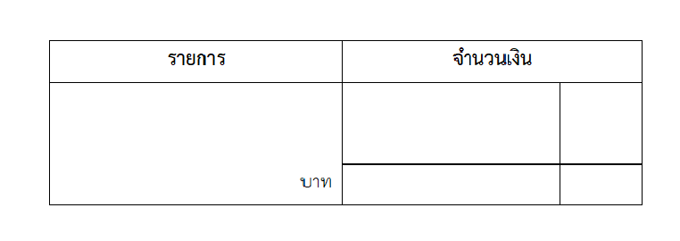
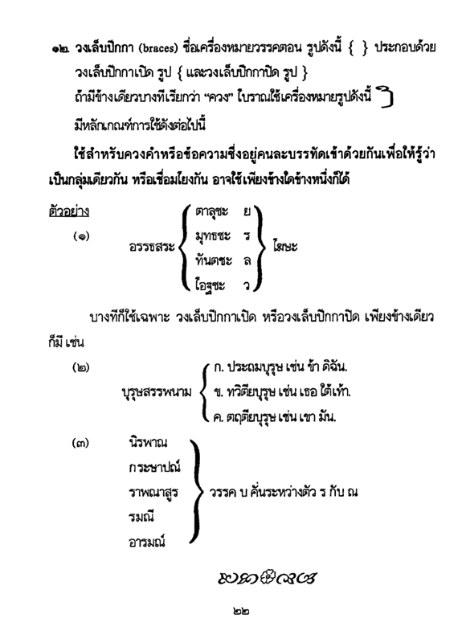

ปรัศนี
ปรัศนี (question mark)
ชื่อเครื่องหมายวรรคตอน รูปดังนี้ ?
มีหลักเกณฑ์การใช้ดังต่อไปนี้
๑. ใช้เมื่อสิ้นสุดความหรือประโยคที่เป็นคำถาม หรือใช้แทนคำถาม
ตัวอย่าง
(๑) "ใคร ?" เขาถามขึ้น
(๒) ทำไมคุณจึงเลิกแต่งหนังสือ ?
๒. ใช้หลังข้อความเพื่อแสดงความสงสัยหรือไม่แน่ใจ มักเขียนอยู่ในวงเล็บ
ตัวอย่าง
(๑) กฤษฎาธาร [กฺริดสะดาทาน] น. พระที่นั่งที่ทำขึ้นสำหรับเกียรติยศ (?) เช่น พระมหาพิชัยราชรถกฤษฎาธาร. (เรื่องพระบรมศพ).
(๒) ในหนังสือราชาธิราชว่า พระเจ้าฟ้ารั่วทิวงคตเมื่อปีฉลู จุลศักราช ๖๗๕ พ.ศ. ๑๘๕๖ มกะตาเป็นอนุชาได้ราชสมบัติ ให้เข้ามาทูลขอให้สมเด็จพระร่วงตั้งพระนามอย่างครั้งพระเจ้าฟ้ารั่ว ได้รับพระนามว่า พระเจ้ารามประเดิด (ประดิษฐ์ ?).
ที่มา : หลักเกณฑ์การใช้เครื่องหมายวรรคตอนและเครื่องหมายอื่น ๆ ฯ ฉบับราชบัณฑิตยสถาน พิมพ์ครั้งที่ ๗ (แก้ไขเพิ่มเติม) หน้า ๒๓
มหัพภาค
มหัพภาค (full stop, period)
ชื่อเครื่องหมายวรรคตอน รูปดังนี้ .
มีหลักเกณฑ์การใช้ดังต่อไปนี้
ใช้เพื่อแสดงว่าจบประโยคหรือจบความ
ตัวอย่าง
(๑) คอยที่นี่.
(๒) ปูชนียสถาน เป็นสถานที่เนื่องด้วยศาสนา ซึ่งเป็นที่ควรแก่การเคารพบูชา เช่น วัดพระศรีรัตนศาสดาราม พระปฐมเจดีย์.
ในกรณีที่ประโยคนั้น ๆ มีเครื่องหมายอัญประกาศหรือเครื่องหมายวงเล็บอยู่ด้วย ให้ใส่เครื่องหมายมหัพภาคไว้หลังสุด
ตัวอย่าง
(๓) ดังที่มีกล่าวไว้ในพระสูตรว่า “ขณะเมื่ออสูรถือเอาซึ่งรูปร่างเป็นตัวตนยืนอยู่บนสันเพชรในกลางมหาสมุทร ความลึกแห่งทะเล ซ่อนร่างกายไว้ครึ่งหนึ่ง ส่วนที่สูงดั่งยอดเขาพระสุเมรุ คือ เศียรของอสูรเห็นตระหง่าน”.
(๔) ยังส่วยสิ่งของต่าง ๆ ซึ่งยอมให้ชาวหัวเมืองหาส่งแทนเข้าเวรรับราชการอีกหลายอย่าง (สิ่งของเหล่านั้นแจ้งรายชื่ออยู่ในพระคลังสินค้าซึ่งจะกล่าวต่อไป).
ที่มา : หลักเกณฑ์การใช้เครื่องหมายวรรคตอนและเครื่องหมายอื่น ๆ ฯ ฉบับราชบัณฑิตยสถาน พิมพ์ครั้งที่ ๗ (แก้ไขเพิ่มเติม) หน้า ๑
ยัติภังค์
ยัติภังค์ (hyphen)
ชื่อเครื่องหมายวรรคตอน รูปดังนี้ –
(อาจเขียนให้ยาวได้หลายขนาดตามความเหมาะสม แต่ไม่ควรเกิน ๒ ช่วงตัวอักษร)
มีหลักเกณฑ์การใช้ดังต่อไปนี้
๑. ใช้เขียนไว้สุดบรรทัดเพื่อต่อพยางค์หรือคำสมาส ซึ่งจำเป็นต้องเขียนแยกบรรทัดกัน เนื่องจากเนื้อที่จำกัด
ตัวอย่าง
คณะกรรมการกำหนดหลักเกณฑ์เกี่ยวกับการใช้ภาษาไทย มีการประชุมทุกวันพฤหัสบดี เวลา ๑๐.๐๐ น. ณ ห้องนันทนาการราชบัณฑิตยสถาน ราชบัณฑิตยสถาน.
๒. ใช้เขียนแยกพยางค์เพื่อบอกคำเต็มที่จำเป็นต้องแยกตามฉันทลักษณ์
ตัวอย่าง
(๑) ลูกเคยมุ่งภักดิณปะระมะธรร– มาธิราชัน– ยะสามี
(๒) ดอยใดมีถ้ำราช– สีห์ประสงค์
เหมืองมาบมีบัวหงส์ หากใกล้
ต้นไม้พุ่มพัวพง นกมาก มีนา
สาวหนุ่มตามชู้ไซร้ เพราะชู้ชอบตา
๓. ใช้แยกพยางค์เพื่อบอกคำอ่าน โดยเขียนไว้ระหว่างพยางค์แต่ละพยางค์
ตัวอย่าง
(๑) เวลา อ่านว่า เว–ลา.
(๒) ประกาศนียบัตร อ่านว่า ปฺระ–กา–สะ–นี–ยะ–บัด, ปฺระ–กาด–สะ–นี–ยะ–บัด.
๔. ใช้แสดงคำที่ละส่วนหน้าหรือส่วนท้ายหรือทั้งส่วนหน้าและส่วนท้ายของคำไว้
ตัวอย่าง
(๑) –กระเฉง ใช้เข้าคู่กับคำ กระฉับ เป็น กระฉับกระเฉง.
(๒) ทุติย– [ทุติยะ–] (แบบ) ว. ที่ ๒, มักใช้นำหน้าศัพท์อื่น เช่น ทุติยดิถี = วัน ๒ ค่ำ, ทุติยมาส = เดือนที่ ๒, ทุติยวาร = ครั้งที่ ๒, ทุติยสุรทิน = วันที่ ๒. (ป.).
(๓) นาคาวโลก [–คาวะ–] อ่านว่า นา–คา–วะ–โลก.
๕. ใช้ในความหมายว่า “ถึง” เพื่อแสดงช่วงเวลา จำนวน สถานที่ ฯลฯ
ตัวอย่าง
(๑) เวลา ๑๐.๓๐–๑๒.๐๐ น. [เว–ลา–สิบ–นา–ลิ–กา–สาม–สิบ–นา–ที–ถึง–สิบ–สอง–นา–ลิ–กา]
(๒) ตั้งแต่วันจันทร์–วันเสาร์ [ตั้ง–แต่–วัน–จัน–ถึง–วัน–เสา]
(๓) ประมาณ ๕๐๐–๖๐๐ คน [ปฺระ–มาน–ห้า–ร้อย–ถึง–หก–ร้อย–คน]
(๔) เที่ยวบินจากกรุงเทพฯ–สุราษฎร์ธานี–ภูเก็ต [เที่ยว–บิน–จาก–กฺรุง–เทบ–ถึง–สุ–ราด–ทา–นี–ถึง–พู–เก็ด]
๖. ใช้เขียนแยกกลุ่มตัวเลขตามรหัสที่กำหนดไว้
ตัวอย่าง
(๑) หมายเลขโทรศัพท์ ๐ ๒๕๓๑ ๓๒๓๔ [หฺมาย–เลข–โท–ระ–สับ สูน–สอง–ห้า–สาม–หฺนึ่ง สาม–สอง–สาม–สี่]
(๒) ISBN 974–8120–44–9
๗. ใช้กระจายอักษรเพื่อให้เห็นว่าคำนั้นประกอบด้วยพยัญชนะ สระ และวรรณยุกต์อะไรบ้าง
ตัวอย่าง
(๑) ก–ร–ร–ม
(๒) แ–ป–ล–ก
(๓) เ–ห–ม– ื –อ–น
(๔) ก–ล–า– ้
(๕) ว– ั –น–น– ั–น– ้
ที่มา : หลักเกณฑ์การใช้เครื่องหมายวรรคตอนและเครื่องหมายอื่น ๆ ฯ ฉบับราชบัณฑิตยสถาน พิมพ์ครั้งที่ ๗ (แก้ไขเพิ่มเติม) หน้า ๑๔-๑๖
ยัติภาค
ยัติภาค (dash)
ชื่อเครื่องหมายวรรคตอน รูปดังนี้ — (ยาว ๒–๓ ช่วงตัวอักษร)
มีหลักเกณฑ์การใช้ดังต่อไปนี้
๑. ใช้ในความหมายว่า “และ” หรือ “กับ” เพื่อบอกความสัมพันธ์ของคำ ๒ คำ
ตัวอย่าง
(๑) เรณู—สัญญา
มีความยินดีขอเชิญร่วมรับประทานอาหาร
เนื่องในงานมงคลสมรส
(๒) ฟุตบอลคิงส์คัปชิงชนะเลิศระหว่างไทย—อินโดนีเซีย ที่สนามศุภชลาศัย เริ่ม ๑๘.๐๐ น.
(๓) ภาษาตระกูลไทย—จีน
๒. ใช้ขยายความ
ตัวอย่าง
(๑) ถิ่น—พายัพ (หมายความว่า เป็นภาษาถิ่นที่ใช้ในภาคพายัพ).
(๒) ขุนช้างขุนแผน—แจ้ง (หมายความว่า เป็นเรื่องขุนช้างขุนแผนสำนวนครูแจ้ง).
๓. ใช้ในความหมายว่า “ถึง” เพื่อแสดงช่วงเวลา จำนวน สถานที่ ฯลฯ เช่นเดียวกับเครื่องหมายยัติภังค์
ตัวอย่าง
(๑) เวลา ๑๐.๓๐—๑๒.๐๐ น. [เว–ลา–สิบ–นา–ลิ–กา–สาม–สิบ–นา–ที–ถึง–สิบ–สอง–นา–ลิ–กา]
(๒) ตั้งแต่วันจันทร์—วันเสาร์ [ตั้ง–แต่–วัน–จัน–ถึง–วัน–เสา]
(๓) ประมาณ ๕๐๐—๖๐๐ คน [ปฺระ–มาน–ห้า–ร้อย–ถึง–หก–ร้อย–คน]
(๔) ระยะทางลำปาง—เชียงใหม่ [ระ–ยะ–ทาง–ลำ–ปาง–ถึง–เชียง–ไหฺม่]
๔. ใช้แทนคำว่า “เป็น”
ตัวอย่าง
พจนานุกรมไทย—อังกฤษ (หมายความว่า พจนานุกรมไทยเป็นอังกฤษ).
๕. ใช้แสดงลำดับย่อยของรายการที่ไม่ต้องการใส่ตัวอักษรหรือตัวเลขบอกลำดับข้อ
ตัวอย่าง
ในรัชสมัยพระบาทสมเด็จพระมงกุฎเกล้าเจ้าอยู่หัวอาจสรุปความเคลื่อนไหวทางวรรณคดีได้ดังนี้
—วรรณคดีประเภทร้อยกรอง เจริญถึงขีดสุดอีกวาระหนึ่ง
—วรรณคดีประเภทร้อยแก้ว ก้าวหน้ายิ่งขึ้นกว่าแต่ก่อน
—เป็นระยะเวลาที่คติทางตะวันตกเข้ามาในวงวรรณคดีไทยมากที่สุด ถ้าเทียบกับสมัยก่อน ๆ
—หวนนิยมวรรณคดีสันสกฤตอีกวาระหนึ่งเหมือนสมัยยุธยา แต่ในคราวนี้ผ่านมาทางต้นฉบับที่แปลเป็นภาษาอังกฤษ.
ที่มา : หลักเกณฑ์การใช้เครื่องหมายวรรคตอนและเครื่องหมายอื่น ๆ ฯ ฉบับราชบัณฑิตยสถาน พิมพ์ครั้งที่ ๗ (แก้ไขเพิ่มเติม) หน้า ๑๗-๑๘
วงเล็บ (นขลิขิต)
วงเล็บ หรือ นขลิขิต (parenthesis)
ชื่อเครื่องหมายวรรคตอน รูปดังนี้ ( ) ประกอบด้วยวงเล็บเปิด รูป ( และวงเล็บปิด รูป )
มีหลักเกณฑ์การใช้ดังต่อไปนี้
๑. ใช้กันข้อความที่ขยายหรืออธิบาย จากข้อความอื่น และข้อความในระหว่างวงเล็บนั้น จะอ่านหรือเว้นเสียก็ได้โดยไม่ทำให้เนื้อความเสียไป
ตัวอย่าง
อริยสัจ ๔ ได้แก่ ๑. ทุกข์ ๒. ทุกขสมุทัย (เหตุให้เกิดทุกข์) ๓. ทุกขนิโรธ (การดับทุกข์) และ ๔. ทุกขนิโรธคามินี ปฏิปทา (ทางดำเนินไปสู่ความดับทุกข์).
๒. ใช้ขยายความให้ชัดเจนยิ่งขึ้น
ตัวอย่าง
(๑) เสฐียรโกเศศ (พระยาอนุมานราชธน)
(๒) เจ้าพระยาพระคลัง (หน)
(๓) พระธรรมราชานุวัตร (ฟู อตฺตสิโว ป. ๖)
(๔) ……….. (นายเสริม วินิจฉัยกุล)
(๕) สิลา น. หิน, ก้อนหิน. (ป.; ส. ศิลา).
๓. ใช้กันตัวอักษรหรือตัวเลขที่เป็นหัวข้อย่อย อาจใช้เพียงวงเล็บปิดข้างเดียวก็ได้
ตัวอย่าง
(๑) (๑) หรือ ๑)
(๒) (ก) หรือ ก)
๔. ใช้กันตัวอักษรหรือตัวเลขบอกเชิงอรรถ
ตัวอย่าง
๑. วันรุ่งแรมสามค่ำ(๑)เป็นสำคัญ อภิวันท์ลาบาทพระชินวร
…………………………………… ………………………………..
…………………………………… ………………………………..
…………………………………… ………………………………..
_____________________
(๑) แรม ๓ ค่ำ เดือน ๓ ตรงกับวันอาทิตย์ที่ ๑๔ กุมภาพันธ์ พ.ศ. ๒๓๕๐.
เครื่องหมาย ( อ่านว่า “วงเล็บเปิด” และเครื่องหมาย ) อ่านว่า “วงเล็บปิด”
ที่มา : หลักเกณฑ์การใช้เครื่องหมายวรรคตอนและเครื่องหมายอื่น ๆ ฯ ฉบับราชบัณฑิตยสถาน พิมพ์ครั้งที่ ๗ (แก้ไขเพิ่มเติม) หน้า ๑๙-๒๐
วิภัชภาค
ชื่อเครื่องหมายวรรคตอน รูปดังนี้ :–
มีหลักเกณฑ์การใช้ดังต่อไปนี้
ใช้หลังคำ “ดังนี้” “ดังต่อไปนี้” เพื่อแจกแจงรายการ รายการที่ตามหลังเครื่องหมายวิภัชภาคให้ขึ้นย่อหน้าใหม่ และใช้กับรายการที่แจกแจงครบทุกรายการ
ตัวอย่าง
การสัมมนาครั้งนี้มีผู้แทนจากส่วนราชการต่าง ๆ เข้าร่วมประชุม ดังต่อไปนี้ :–
กรมวิชาการ
กรมอาชีวศึกษา
กรมวิชาการเกษตร
กรมอนามัย
กรมการแพทย์
ที่มา : หลักเกณฑ์การใช้เครื่องหมายวรรคตอนและเครื่องหมายอื่น ๆ ฯ ฉบับราชบัณฑิตยสถาน พิมพ์ครั้งที่ ๗ (แก้ไขเพิ่มเติม) หน้า ๑๓
อัฒภาค
อัฒภาค (semicolon)
ชื่อเครื่องหมายวรรคตอน รูปดังนี้ ;
มีหลักเกณฑ์การใช้ดังต่อไปนี้
๑. ใช้แยกประโยคเปรียบเทียบออกจากกัน
ตัวอย่าง
(๑) ลักษณะเขียนหนังสือ เราเขียนถ้อยคำติดกันไปหมดไม่เว้นระยะคำทุก ๆ คำอย่างเช่นลักษณะเขียนหนังสือของชาวยุโรป, จึ่งทำให้เป็นที่ฉงนแก่ผู้ไม่สู้ชำนิชำนาญในเชิงการอ่านหนังสือไทย; ไม่ใช่แต่ชาวต่างประเทศ, ถึงแม้คนไทย ๆ เราเองก็รู้สึกลำบากอยู่ไม่น้อยเหมือนกัน.
(๒) คนบางคนมีความสามารถเล่นเครื่องดนตรีได้แทบทุกชนิด; บางคนเล่นไม่เป็นสักอย่าง.
(๓) น้ำมาปลากินมด; น้ำลดมดกินปลา.
๒. ใช้คั่นระหว่างประโยคที่มีรูปประโยคและใจความสมบูรณ์อยู่แล้ว เพื่อแสดงความต่อเนื่องอย่างใกล้ชิดของประโยคนั้น
ตัวอย่าง
วาทยกรประสบอุบัติเหตุได้รับบาดเจ็บสาหัส; การแสดงดนตรีจึงต้องงด.
๓. ใช้แบ่งประโยค กลุ่มคำ หรือกลุ่มตัวเลขที่มีเครื่องหมายจุลภาคอยู่แล้ว ออกเป็นส่วนเป็นตอนให้เห็นชัดเจนยิ่งขึ้น เพื่อกันความสับสน
๓.๑ แบ่งประโยค
ตัวอย่าง
นางสาวมณฑาทิพย์กำลังแต่งตัว, หวีผม, แต่งหน้า, จะไปทำงาน; บังเอิญมีแขกมาหา, ต้องออกมารับแขก; เมื่อแขกไปแล้ว, จึงออกจากบ้าน; ทำให้ไปถึงที่ทำงานสาย.
๓.๒ แบ่งกลุ่มตัวเลข
ตัวอย่าง
๑, ๓, ๕; ๒, ๔, ๖
๔. ใช้คั่นคำในรายการที่มีจำนวนมาก ๆ เพื่อจำแนกรายการออกเป็นพวก ๆ
ตัวอย่าง
การสัมมนาครั้งนี้มีผู้แทนจากหน่วยราชการต่าง ๆ เข้าร่วมด้วย เช่น กรมวิชาการ, กรมอาชีวศึกษา, ในสังกัดกระทรวงศึกษาธิการ; กรมป่าไม้, กรมวิชาการเกษตร, ในสังกัดกระทรวงเกษตรและสหกรณ์; กรมอนามัย, กรมการแพทย์, ในสังกัดกระทรวงสาธารณสุข.
๕. ใช้ในหนังสือประเภทพจนานุกรม
๕.๑ เพื่อคั่นบทนิยามของคำที่มีความหมายหลายอย่าง แต่ความหมายนั้นมีนัยเนื่องกับความหมายเดิม
ตัวอย่าง
(๑) กิ่ง น. ส่วนที่แยกออกจากต้น, แขนง; ใช้เรียกส่วนย่อยที่แยกออกไปจากส่วนใหญ่ แต่ยังขึ้นอยู่กับส่วนใหญ่ เช่น กิ่งอำเภอ กิ่งสถานีตำรวจ; ลักษณนามเรียกงาช้าง ว่า กิ่ง; เรือชนิดหนึ่งในกระบวนพยุหยาตรา.
(๒) ดุม น. ส่วนกลางของล้อเกวียนหรือล้อรถที่มีรูสำหรับสอดเพลา; เครื่องกลัดกันส่วนต่าง ๆ ของเสื้อผ้าไม่ให้แยกออกจากกันทำเป็นรูปต่าง ๆ มักมีรังดุมสำหรับขัด, กระดุม ลูกกระดุม หรือ ลูกดุม ก็เรียก.
๕.๒ เพื่อคั่นอักษรย่อบอกที่มาของคำ
ตัวอย่าง
(๑) กุศล [–สน] น. สิ่งที่ดีที่ชอบ, บุญ. ว. ฉลาด (ส.; ป. กุสล).
(๒) ปกรณ์ [ปะกอน] น. คัมภีร์, ตำรา, หนังสือ. (ป. ปกรณ; ส. ปฺรกรณ).
ที่มา : หลักเกณฑ์การใช้เครื่องหมายวรรคตอนและเครื่องหมายอื่น ๆ ฯ ฉบับราชบัณฑิตยสถาน พิมพ์ครั้งที่ ๗ (แก้ไขเพิ่มเติม) หน้า ๘-๑๐
อัศเจรีย์
อัศเจรีย์ (exclamation mark)
ชื่อเครื่องหมายวรรคตอน รูปดังนี้ !
มีหลักเกณฑ์การใช้ดังต่อไปนี้
๑. ใช้เขียนหลังคำ วลี หรือประโยคที่เป็นคำอุทาน
ตัวอย่าง
(๑) อุ๊ย !
(๒) กรรมจริง !
(๓) เขาตายเสียแล้ว !
๒. ใช้เขียนหลังคำเลียนเสียงธรรมชาติ เพื่อให้ผู้อ่านทำเสียงได้เหมาะสมกับเหตุการณ์ในเรื่องนั้น ๆ เมื่อไม่สามารถจะเขียนให้ถูกต้องเป็นตัวหนังสือได้
ตัวอย่าง
(๑) โครม !
(๒) ปัง !
(๓) เปรี้ยง !
๓. ใช้เขียนหลังข้อความสั้น ๆ ที่ต้องการเน้นเป็นคำสั่งหรือคำเตือน เป็นต้น
ตัวอย่าง
(๑) ไป !
(๒) หยุด !
(๓) ระวัง ! อันตรายจากไฟฟ้าแรงสูง !
ที่มา : หลักเกณฑ์การใช้เครื่องหมายวรรคตอนและเครื่องหมายอื่น ๆ ฯ ฉบับราชบัณฑิตยสถาน พิมพ์ครั้งที่ ๗ (แก้ไขเพิ่มเติม) หน้า ๒๔
จุลภาค
จุลภาค (comma) หรือ จุดลูกน้ำ
ชื่อเครื่องหมายวรรคตอน รูปดังนี้ ,
มีหลักเกณฑ์การใช้ดังต่อไปนี้
๑. ใช้แยกวลีหรืออนุประโยคเพื่อกันความเข้าใจสับสน
ตัวอย่าง
(๑) ส่วน การประพันธ์เรื่องนี้, ที่ใดเป็นร้อยแก้วอยู่ในภาษาอังกฤษ ข้าพเจ้าก็ได้แต่งเป็นร้อยแก้ว, และที่ใดเป็นกาพย์กลอนก็แต่งเป็นกาพย์กลอน, เพื่อให้รูปคล้ายของเดิมมากที่สุดที่จะเป็นได้.
(๒) นายแดง, ที่เดินมากับนายดำ, เป็นกำนัน.
๒. ใช้คั่นคำในรายการ ที่เขียนต่อ ๆ กัน ตั้งแต่ ๓ รายการขึ้นไป โดยเขียนคั่นแต่ละรายการ ส่วนหน้าคำ “และ” หรือ “หรือ” ที่อยู่หน้ารายการสุดท้ายไม่จำเป็นต้องใส่เครื่องหมายจุลภาค
ตัวอย่าง
(๑) สินค้าราคาควบคุม ได้แก่ ข้าวสาร, น้ำตาลทราย, น้ำมันพืช และผงซักฟอก.
(๒) โทษมี ๓ ประการ คือ ปรับ, จำ หรือ ทั้งปรับทั้งจำ.
ในกรณีที่ต้องการแยกกลุ่มให้เห็นชัด อาจใส่เครื่องหมายจุลภาคหน้าคำ “และ” หรือ “หรือ” ก็ได้
ตัวอย่าง
(๓) เช็คของบริษัทนี้จะสมบูรณ์เมื่อมีผู้ลงนาม ๓ คน คือ ก หรือ ข, ค หรือ ง, และ จ ลงนาม.
(๔) เช็คของบริษัทนี้จะสมบูรณ์เมื่อมีผู้ลงนาม ๓ คน คือ จ ก ค, จ ก ง, หรือ จ ข ค, จ ข ง.ตั
๓. ใช้ในการเขียนบรรณานุกรม ดรรชนี และนามานุกรม เป็นต้น
๓.๑ ใช้คั่นเมื่อมีการสับที่กันระหว่างนามสกุลกับชื่อ
ตัวอย่าง
๑. ปาสเตอร์, หลุยส์
๒. อัลคอตต์, ลุยซา เมย์
๓.๒ ใช้คั่นเมื่อมีการสับที่กันระหว่างชื่อ นามสกุล กับคำนำหน้านาม หรือยศ และระหว่างราชทินนาม กับบรรดาศักดิ์ ฐานันดรศักดิ์ หรือสมณศักดิ์ เป็นต้น
ตัวอย่าง
๑. วิสาขา, นาง
๒. โกสุมวดี สุดใจ, นางสาว
๓. เปรม ติณสูลานนท์, พลเอก
๔. วันรัต, สมเด็จพระ
๕. นราธิปพงศ์ประพันธ์, พลตรี พระเจ้าวรวงศ์เธอ กรมหมื่น
๖. พระคลัง (หน), เจ้าพระยา
๗. อุปกิตศิลปสาร, พระยา
๓.๓ ใช้คั่นเมื่อมีการสับที่กันระหว่างคำที่เป็นใจความหลักกับคำประกอบ
ตัวอย่าง
(๑) ประชาธิปไตย, ระบอบ
(๒) มหาธาตุ, วัด
(๓) ไทย, ประเทศ
๔. ใช้คั่นจำนวนเลขนับจากหลักหน่วยไปทีละ ๓ หลัก
ตัวอย่าง
(๑) ๑,๐๐๐ [หนึ่ง-พัน]
(๒) ๑,๐๐๐,๐๐๐ [หนึ่ง-ล้าน]
(๓) ๑,๐๐๐,๐๐๐,๐๐๐ [หนึ่ง-พัน-ล้าน]
(๔) ๑,๐๐๐,๐๐๐,๐๐๐,๐๐๐ [หนึ่ง-ล้าน-ล้าน]
ที่มา : หลักเกณฑ์การใช้เครื่องหมายวรรคตอนและเครื่องหมายอื่น ๆ ฯ ฉบับราชบัณฑิตยสถาน พิมพ์ครั้งที่ ๗ (แก้ไขเพิ่มเติม) หน้า ๕-๗
จุด
จุด (dot, point)
ชื่อเครื่องหมาย รูปดังนี้ .
มีหลักเกณฑ์การใช้ดังต่อไปนี้
๑. ใช้เขียนไว้หลังตัวอักษรเพื่อแสดงว่าเป็นอักษรย่อ
ตัวอย่าง
(๑) พ.ศ. ย่อมาจาก พุทธศักราช
(๒) ค.ศ. ย่อมาจาก คริสต์ศักราช
(๓) วศ.บ. ย่อมาจาก วิศวกรรมศาสตรบัณฑิต
๒. ใช้เขียนไว้ข้างหลังตัวอักษรหรือตัวเลขที่บอกลำดับข้อ
ตัวอย่าง
(๑) ก. [กอ]
ข. [ขอ]
ค. [คอ]
(๒) ๑. [หฺนึ่ง]
๒. [สอง]
๓. [สาม]
ในกรณีที่มีข้อย่อย ให้ใส่ลำดับข้อย่อยไว้หลังจุด
ตัวอย่าง
(๓) ๑.๑ [หฺนึ่ง–จุด–หฺนึ่ง]
(๔) ๑.๑๐ [หฺนึ่ง–จุด–สิบ]
(๕) ๔.๓.๑๒ [สี่–จุด–สาม–จุด–สิบ–สอง]
๓. ใช้คั่นระหว่างชั่วโมงกับนาทีเพื่อบอกเวลา
ตัวอย่าง
๑๐.๑๕ น. [สิบ–นา–ลิ–กา–สิบ–ห้า–นา–ที]
๔. ใช้เป็นจุดทศนิยม (หลังจุดทศนิยมให้อ่านตัวเลขเรียงกันไป)
ตัวอย่าง
(๑) ๑.๒๓๕ [หฺนึ่ง–จุด–สอง–สาม–ห้า]
(๒) ๓ นาที ๓๐.๗๕ วินาที [สาม–นา–ที–สาม–สิบ–จุด–เจ็ด–ห้า–วิ–นา–ที]
(๓) ๓.๕๘๗ เมตร [สาม–จุด–ห้า–แปด–เจ็ด–เมด]
(๔) ๔.๕๐๘ ล้านบาท [สี่–จุด–ห้า–สูน–แปด–ล้าน–บาด]
ยกเว้นในกรณีเงินตรา ถ้าอ่านเป็นหน่วยเงินตราได้ ให้อ่านตามหน่วยเงินตรานั้น ๆ เช่น
(๔) ๔.๕๐ บาท [สี่–บาท–ห้า–สิบ–สะ–ตาง]
(๕) ๘.๖๕ ดอลลาร์ [แปด–ดอน–ล่า–หก–สิบ–ห้า–เซ็น]
๕. ใช้บอกว่าเป็นตัวอักษรนำ อักษรควบ ในการบอกคำอ่าน
ตัวอย่าง
(๑) หนึ่ง อ่านว่า หฺนึ่ง
(๒) ปลา อ่านว่า ปฺลา
๖. ใช้บอกว่าเป็นตัวอักษรควบหรือเป็นตัวสะกดในการเขียนภาษาบาลีสันสกฤตที่เขียนด้วยอักษรไทย
ตัวอย่าง
(๑) มิตฺร [มิด–ตฺระ]
(๒) ราชนฺ [รา–ชัน]
(๓) นโม ตสฺส [นะ–โม–ตัด–สะ]
๑๐. ใช้เขียนแทนตัวอักษรที่ชำรุดหรืออ่านไม่ออกในการคัดลอกข้อความจากจารึก โดยใช้จุด ๑ จุด แทนอักษร ๑ ตัว
ตัวอย่าง
คำจารึก องม่าน ี เมองน.. ี เมองพลววพ๋นฝงงของ
คำอ่าน องม่าน เมืองน.. เมืองพลัว พ้นฝั่งของ
ที่มา : หลักเกณฑ์การใช้เครื่องหมายวรรคตอนและเครื่องหมายอื่น ๆ ฯ ฉบับราชบัณฑิตยสถาน พิมพ์ครั้งที่ ๗ (แก้ไขเพิ่มเติม) หน้า ๒-๔
ไปยาลใหญ่ หรือ เปยยาลใหญ่
ชื่อเครื่องหมายวรรคตอน รูปดังนี้ ฯลฯ
มีหลักเกณฑ์การใช้ดังต่อไปนี้
๑. ใช้สำหรับละข้อความข้างท้ายที่อยู่ในประเภทเดียวกัน ซึ่งยังมีอีกมาก แต่ไม่ได้นำมาแสดงไว้
ตัวอย่าง
(๑) สำนวนไทยที่ขึ้นต้นด้วยคำว่า “หน้า” มี หน้าตาย หน้าเป็น หน้าบาน ฯลฯ
(๒) สิ่งของที่ซื้อขายกันในตลาดมี เนื้อสัตว์ ผัก ผลไม้ น้ำตาล น้ำปลา ฯลฯ
การอ่านเครื่องหมายไปยาลใหญ่ หรือ เปยยาลใหญ่ ที่อยู่ข้างท้ายข้อความ ให้อ่านว่า “ละ” หรือ “และอื่น ๆ”
๒.โบราณใช้ละคำหรือข้อความที่อยู่ตรงกลางก็ได้ โดยบอกตอนต้นและตอนจบไว้
ตัวอย่าง
(๑) พยัญชนะไทย ๔๔ ตัว มี ก ฯลฯ ฮ
(๒) เขาเจริญพุทธคุณว่า อิติปิ โส ฯลฯ ภควาติ
การอ่านเครื่องหมายไปยาลใหญ่ หรือ เปยยาลใหญ่ ที่อยู่ตรงกลางข้อความ อ่านว่า “ละถึง”
ที่มา : หลักเกณฑ์การใช้เครื่องหมายวรรคตอนและเครื่องหมายอื่น ๆ ฯ ฉบับราชบัณฑิตยสถาน พิมพ์ครั้งที่ ๗ (แก้ไขเพิ่มเติม) หน้า ๔๐
ไปยาลน้อย หรือ เปยยาลน้อย
ชื่อเครื่องหมายวรรคตอน รูปดังนี้ ฯ
มีหลักเกณฑ์การใช้ดังต่อไปนี้
๑. ใช้ละคำที่รู้กันดีแล้ว โดยละส่วนท้ายไว้เหลือแต่ส่วนหน้าของคำพอเป็นที่เข้าใจ
ตัวอย่าง
(๑) กรุงเทพมหานคร เขียนเป็น กรุงเทพฯ
(๒) โปรดเกล้าโปรดกระหม่อม เขียนเป็น โปรดเกล้าฯ
๒. ใช้ละส่วนท้ายของวิสามานยนาม ซึ่งได้กล่าวมาก่อนแล้ว
ตัวอย่าง
(๑) มหามกุฏราชวิทยาลัย เขียนเป็น มหามกุฏฯ
(๒) กรมพระราชวังบวรสถานมงคล เขียนเป็น กรมพระราชวังบวรฯ
(๓) วัดพระเชตุพนวิมลมังคลาราม ราชวรมหาวิหาร เขียนเป็น วัดพระเชตุพนฯ
หมายเหตุ
ก. คำแบบแผน โปรดเกล้าโปรดกระหม่อม ที่เขียนละส่วนท้ายเป็น โปรดเกล้าฯ ในเวลาอ่านจะต้องอ่านเต็ม
ข. ถ้าไม่ใช่คำแบบแผน จะอ่านเต็มหรือไม่ก็ได้
๓. คำ “ฯพณฯ” อ่านว่า “พะนะท่าน” ใช้เป็นคำนำหน้าชื่อ หรือตำแหน่งข้าราชการผู้ใหญ่ ตั้งแต่ระดับรัฐมนตรีขึ้นไป และเอกอัครราชทูต เป็นต้น
ตัวอย่าง
(๑) ฯพณฯ พลเอก เปรม ติณสูลานนท์ ประธานองคมนตรี
(๒) ฯพณฯ นายกรัฐมนตรี
(๓) ฯพณฯ นายศุภชัย ภู่งาม ประธานศาลฎีกา
(๔) ฯพณฯ เอกอัครราชทูตไทยประจำองค์การสหประชาชาติ
ที่มา : หลักเกณฑ์การใช้เครื่องหมายวรรคตอนและเครื่องหมายอื่น ๆ ฯ ฉบับราชบัณฑิตยสถาน พิมพ์ครั้งที่ ๗ (แก้ไขเพิ่มเติม) หน้า ๓๙
ไม้ยมก หรือ ยมก
ชื่อเครื่องหมายวรรคตอน รูปดังนี้ ๆ
มีหลักเกณฑ์การใช้ดังต่อไปนี้
ใช้เขียนหลังคำ วลี หรือประโยค เพื่อให้อ่านซ้ำคำ วลีหรือประโยคอีกครั้งหนึ่ง
ตัวอย่าง
(๑) เด็กเล็ก ๆ [เด็ก-เล็ก-เล็ก]
(๒) ในวันหนึ่ง ๆ [ใน-วัน-หนึ่ง-วัน-หนึ่ง]
(๓) แต่ละวัน ๆ [แต่-ละ-วัน-แต่-ละ-วัน]
(๔) มีเสียงตะโกนว่า “ไฟไหม้ ๆ” [มี-เสียง-ตะ-โกน-ว่า-ไฟ-ไหฺม้-ไฟ-ไหฺม้]
หมายเหตุ
๑. คำที่เป็นคำซ้ำ ต้องใช้ไม้ยมก หรือยมก เสมอ เช่น สีดำ ๆ [สี-ดำ-ดำ]
เด็กตัวเล็ก ๆ [เด็ก-ตัว-เล็ก-เล็ก]
๒. ไม่ควรใช้ไม้ยมก หรือ ยมก ในกรณีดังต่อไปนี้
๒.๑ เมื่อเป็นคำคนละบทคนละความ
ตัวอย่าง
| เขียนผิด | เขียนถูก |
| ฉันจะไปปทุมวัน ๆ นี้. | ฉันจะไปปทุมวันวันนี้. |
| เขาเคยมาทุกวัน ๆ นี้ไม่มา. | เขาเคยมาทุกวัน วันนี้ไม่มา. |
| เขาซื้อสี ๕ กระป๋อง ๆ ละ ๕๐ บาท. | เขาซื้อสี ๕ กระป๋อง กระป๋องละ ๕๐ บาท. |
| นายดำ ๆ นา. | นายดำ ดำนา. |
๒.๒ เมื่อรูปคำเดิมเป็นคำ ๒ พยางค์ ที่มีเสียงซ้ำกัน
ตัวอย่าง
(๑) นานา เช่น นานาชาติ นานาประการ
(๒) จะจะ เช่น เขียนจะจะ ดำนาจะจะ มุง (หลังคา) จะจะ
๒.๓ เป็นคำคนละชนิดกัน
ตัวอย่าง
คนคนนี้มีวินัย. (คนคำแรกเป็นสามานยนาม คนคำหลังเป็นลักษณนาม)
๒.๔ เมื่อเป็นคำประพันธ์
ตัวอย่าง
๑ หวั่นหวั่นจิตรคิดคิดหวนครวญครวญหา
คอยคอยหายหลายหลายนัดผัดผัดมา แทบแทบเดือนเตือนเตือนว่าช้าช้าวัน
เอะเอะผิดติดติดเบือนเชือนเชือนไฉน แปลกแปลกใจใคร่ใคร่รู้ดูดูขัน
ทำทำทีหนีแหนงแกล้งแกล้งกัน เชิงเชิงชั้นหันหันบากฉากฉากใจ
…………………………………………… …………………………………………….
ยกเว้นกลบทที่มีกำหนดให้ใช้ไม้ยมก
ตัวอย่าง
มีรูปเหญี่ยว ๆ ตั้ง ตามไตร มุขนา
ทกที่มุม ๆ ของ เขตต์นั้น
ป้านลมจับ ๆ ไสว แสวงเหยื่อ เยี่ยงเฮย
กระเบื้องประดับ ๆ ถ้วยไสร้ สบสรรพ์ฯ
ที่มา : หลักเกณฑ์การใช้เครื่องหมายวรรคตอนและเครื่องหมายอื่น ๆ ฯ ฉบับราชบัณฑิตยสถาน พิมพ์ครั้งที่ ๗ (แก้ไขเพิ่มเติม) หน้า ๓๗-๓๘
ทวิภาค
ทวิภาค (colon)
ชื่อเครื่องหมายวรรคตอน รูปดังนี้ :
มีหลักเกณฑ์การใช้ดังต่อไปนี้
๑. ใช้ไขความ แทนคำ "คือ" หรือ "หมายถึง"
ตัวอย่าง
(๑) กฤษณา : กฤษณาสอนน้อง แบบเรียนกวีนิพนธ์.
(๒) เพชรมงกุฎ : ลิลิตเพชรมงกุฎ ฉบับหอพระสมุดวิชรญาณ.
๒. ใช้หลังคำ "ดังนี้" "ดังต่อไปนี้" เพื่อแจกแจงรายการ
ตัวอย่าง
ในสวนของนายเขียวมีไม้ผลชนิดต่างๆ ดังนี้ : ละมุด, ขนุน, ลางสาด, เงาะ, มังคุด, และทุเรียน.
๓. ใช้คั่นบอกเวลา
ตัวอย่าง
(๑) ๖ : ๔๕ น. [หก-นา-ลิ-กา-สี่-สิบ-ห้า-นา-ที]
(๒) ๗ : ๓๐ : ๔๕ [เจ็ด-นา-ลิ-กา-สาม-สิบ-นา-ที-สี่-สิบ-ห้า-วิ-นา-ที]
(๓) ๘ : ๒๐ : ๓๘.๘๐ [แปด-นา-ลิ-กา-ยี่-สิบ-นา-ที-สาม-สิบ-แปด-จุด-แปด-สูน-วิ-นา-ที]
ที่มา : หลักเกณฑ์การใช้เครื่องหมายวรรคตอนและเครื่องหมายอื่น ๆ ฯ ฉบับราชบัณฑิตยสถาน พิมพ์ครั้งที่ ๗ (แก้ไขเพิ่มเติม) หน้า ๑๑
ต่อ
ชื่อเครื่องหมาย รูปดังนี้ :
มีหลักเกณฑ์การใช้ดังต่อไปนี้
๑. ใช้แสดงอัตราส่วนและมาตราส่วน
ตัวอย่าง
(๑) ในการหุงข้าวใช้ข้าวและน้ำในอัตราส่วน ๑ : ๒ [หนึ่ง-ต่อ-สอง]
(หมายความว่า ใช้ข้าว ๑ ส่วนต่อน้ำ ๒ ส่วน)
(๒) แผนที่นี้ใช้มาตราส่วน ๑ : ๑๐๐,๐๐๐ [หนึ่ง-ต่อ-แสน, หนึ่ง-ต่อ-หนึ่ง-แสน]
(หมายความว่า ระยะในแผนที่ ๑ หน่วยเท่ากับระยะจริง ๑๐๐,๐๐๐ หน่วย เช่น ระยะในแผนที่ ๑ เซนติเมตร เท่ากับระยะจริง ๑๐๐,๐๐๐ เซนติเมตร หรือ ๑ กิโลเมตร)
๒. ใช้แสดงสัดส่วน
ตัวอย่าง
ในการผสมคอนกรีตใช้ปูนซีเมนต์ หิน และทรายในสัดส่วน ๑ : ๒ : ๔ [หนึ่ง-ต่อ-สอง-ต่อ-สี่]
(หมายความว่า ใช้ปูนซีเมนต์ ๑ ส่วนต่อหิน ๒ ส่วนต่อทราย ๔ ส่วน โดยปริมาตร)
๓. ใช้แสดงปฏิภาค
ตัวอย่าง
๕ : ๑๐ = ๑ : ๒ [ห้า-ต่อ-สิบ-เท่า-กับ-หนึ่ง-ต่อ-สอง]
(หมายความว่า ๕/๑๐ มีค่าเท่ากับ ๑/๒)
ที่มา : หลักเกณฑ์การใช้เครื่องหมายวรรคตอนและเครื่องหมายอื่น ๆ ฯ ฉบับราชบัณฑิตยสถาน พิมพ์ครั้งที่ ๗ (แก้ไขเพิ่มเติม) หน้า ๑๒
วงเล็บเหลี่ยม
วงเล็บเหลี่ยม (square brackets)
ชื่อเครื่องหมายวรรคตอน รูปดังนี้ [ ] ประกอบด้วยวงเล็บเปิด รูป [ และวงเล็บปิด รูป ] มีหลักเกณฑ์การใช้ดังต่อไปนี้
๑. ใช้กันคำหรือข้อความที่ขยายหรืออธิบายจากข้อความอื่นในอีกลักษณะหนึ่ง เมื่อข้อความนั้นได้ใช้เครื่องหมายวงเล็บแบบอื่นด้วย
ตัวอย่าง
(๑) กตัญญู ว. (ผู้) รู้อุปการะที่ท่านทำให้, (ผู้) รู้คุณท่าน, เป็นคำคู่กับ กตเวที. [ป.กต = (อุปการะ) ที่ท่านทำแล้ว + ญ = ผู้รู้].
(๒) องค์ที่ ๔ ตอนที่ ๒ ริมรั้วค่ายหลวง ตำบลกุรุเกษตร์ [ใช้เป็นม่านม้วนทิ้งระหว่างหลืบ เขียนเป็นภาพรั้วค่ายระเนียด](ท้าวชัยเสน แต่งเครื่องรบ ออกพร้อมด้วยศุภางค์และนายทหารอีกสองสามคน) ๒. ใช้ในความหมายพิเศษเฉพาะวิชา เช่น ในการเขียนบรรณานุกรมและเชิงอรรถใช้กันข้อความในกรณีที่ข้อความนั้นไม่ปรากฎในหนังสือ แต่ผู้ทำบรรณานุกรมเพิ่มเติมเข้าไปเองโดยมีหลักฐานยืนยัน
ตัวอย่าง
[ตรี อมาตยกุล] นำชมหอสมุดดำรงราชานุภาพ. พระนคร : กรมศิลปากร, ๒๔๙๔
ที่มา : หลักเกณฑ์การใช้เครื่องหมายวรรคตอนและเครื่องหมายอื่น ๆ ฯ ฉบับราชบัณฑิตยสถาน พิมพ์ครั้งที่ ๗ (แก้ไขเพิ่มเติม) หน้า ๒๑
อัญประกาศ
อัญประกาศ (quotation marks)
๑. อัญประกาศคู่ หรือที่เรียกโดยทั่วไป ว่า “อัญประกาศ” (double quotation marks) ชื่อเครื่องหมายวรรคตอน รูปดังนี้ “ ” ประกอบด้วยอัญประกาศเปิดรูป “ และอัญประกาศปิด รูป ”
มีหลักเกณฑ์การใช้ดังต่อไปนี้
๑. ใช้เพื่อแสดงว่าคำหรือข้อความนั้นเป็นคำพูด บทสนทนา หรือความนึกคิด
ตัวอย่าง
(๑) มารดาสอนบุตรว่า “ลูกเอ๋ย ถ้าเจ้ารักแม่มากเท่าใด เจ้าจงพยายามให้คนอื่นเขารักเจ้ามากเท่านั้นเถิดลูก"
(๒) "ความรักคืออะไร ?" คนหนึ่งถาม
“ความรักก็คืออารมณ์ชนิดหนึ่ง เช่น เดียวกับความเกลียด ซึ่งไม่จำกัดจำนวนคนที่ถูกเกียดจะพร้อมกันทีเดียวหลายคนก็ได้แล้วแต่จะสะดวก” อีกคนหนึ่งตอบ.
(๓) เขารำพึงอยู่ในใจว่า “ช่างโชคดีกระไรปานนั้น”.
๒. ใช้เพื่อแสดงว่าคำหรือข้อความนั้นคัดมาจากที่อื่น
ตัวอย่าง
หนังสือพจนานุกรม ฉบับราชบัณฑิตยสถาน พ.ศ. ๒๕๔๒ ได้ให้บทนิยามคำ ระลึกไว้ว่า “ก.คิดถึงหรือนึกถึงเรื่องราวหรือเหตุการณ์ในอดีตได้ เช่น รำลึกถึงความหลัง, รำลึก ก็ว่า”.
๓. ใช้เพื่อเน้นความให้ชัดเจนขึ้น
ตัวอย่าง
คำว่า “พ่อขุน” ประกอบไปด้วยคำว่า “ขุน” ซึ่งเป็นคำเรียกพระนามพระเจ้าแผ่นดินแคว้นเล็กๆ และคำว่า “พ่อ” ซึ่งแสดงว่าเป็นหัวหน้าของขุนในแคว้นต่างๆ เทียบได้กับคำว่า “แม่” ในคำแม่ทัพ ซึ่งความหมายว่าเป็นหัวหน้าของกองทัพ
๔. ใช้เพื่อเน้นคำหรือข้อความเพื่อให้รู้ว่าคำหรือข้อความนั้นเป็นสำนวนหรือเป็นภาษาปาก ซึ่งมีความผิดไปจากความหมายปรกติ
ตัวอย่าง
เขาส่งลูกชายไป “ชุบตัว” ที่เมืองนอก
๕.ถ้าข้อความในเครื่องหมายอัญประกาศมีความยาวหลายย่อหน้า ให้ใส่เครื่องหมายอัญประกาศเปิดไว้ข้างหน้าแต่ละย่อหน้า ส่วนเครื่องหมายอัญประกาศปิดให้ใส่ไว้เฉพาะท้ายย่อหน้าสุดท้ายเท่านั้น
ตัวอย่าง
ครั้งหนึ่งพระพุทธองค์ตรัสว่า
"...ดูกรภิกษุทั้งหลาย สงสารนี้กำหนดที่สุดเบื้องต้นปลายไม่ได้ เมื่อเหล่าสัตว์ผู้มีอวิชชาเป็นที่กางกั้น มีตัณหาเป็นเครื่องประกอบท่องเที่ยวไปมาอยู่ ที่สุดเบื้องต้นย่อมไม่ปรากฎ ฯลฯ
" ดูกรภิกษุทั้งหลาย ท่อนไม้ที่บุคคลโยนขึ้นไปบนอากาศ บางคราวก็ตกลงทางโคน บางคราวก็ตกลงทางขวาง บางคราวก็ตกลงทางปลาย แม้ฉันใด สัตว์ทั้งหลายผู้มีวิชชาเป็นที่กางกั้น มีตัณหาเป็นเครื่องประกอบไว้ท่องเที่ยวไปมาอยู่ ก็ฉันนั้นแล บางคราวก็จากโลกนี้ไปสู่ปรโลก บางคราวก็จากปรโลกมาสู่โลกนี้ ข้อนั้น เพราะเหตุไร เพราะว่า สงสารนี้กำหนดที่สุดเบื้องต้นเบื้องปลายไม่ได้...”.
เครื่องหมาย “ อ่านว่า “อัญประกาศเปิด” และเครื่องหมาย ” อ่านว่า “อัญประกาศปิด”
ถ้าข้อความในเครื่องหมายอัญประกาศมีความยาวหลายย่อหน้า
และใส่เครื่องหมายอัญประกาศเปิดไว้ทุกย่อหน้า ให้อ่าน “อัญประกาศเปิด” เฉพาะเมื่อเริ่มต้นข้อความเท่านั้น และอ่าน “อัญประกาศปิด” เมื่อจบข้อความ
๒. อัญประกาศเดี่ยว (single quotation marks) ชื่อเครื่องหมายวรรคตอนรูปดังนี้ ‘ ' ประกอบด้วย อัญประกาศเดี่ยวเปิด รูป ‘ และอัญประกาศเดี่ยวปิด รูป ’
มีหลักเกณฑ์การใช้ดังต่อไปนี้
ใช้แทนเครื่องหมายอัญประกาศคู่ในข้อความที่มีการใช้เครื่องหมายอัญประกาศคู่อยู่แล้ว
ตัวอย่าง
อาจารย์ทิมสอนนายแดงผู้ศิษย์ว่า “นี่เจ้าแดง! เจ้าจงจำสุภาษิตว่า ‘เราก็จิตคิดดูเล่าเขาดีใจ ปลูกอื่นไยปลูกไมตรีดีกว่าพาล’ นี้ไว้ และถือตามนั้นด้วย เป็นหลักของเจ้าในการคบเพื่อน”
ที่มา : หลักเกณฑ์การใช้เครื่องหมายวรรคตอนและเครื่องหมายอื่น ๆ ฯ ฉบับราชบัณฑิตยสถาน พิมพ์ครั้งที่ ๗ (แก้ไขเพิ่มเติม) หน้า ๒๕-๒๗
ไข่ปลา หรือ จุดไข่ปลา
ปลา หรือ จุดไข่ปลา (ellipsis, dotted line)
ชื่อเครื่องหมายวรรคตอนรูปดังนี้ ...มีหลักเกณฑ์การใช้ดังต่อไปนี้
๑. ใช้สำหรับละข้อความที่ไม่ต้องการกล่าวเพื่อจะชี้ว่า
ข้อความที่นำมากล่าวนั้นตัดตอนมาเพียงบางส่วน ใช้ได้ทั้งตอนขึ้นต้น ตอนกลาง และตอนลงท้ายข้อความโดยใช้ละด้วยจุดอย่างน้อย ๓ จุด
ตัวอย่าง
"...การศึกษาสำหรับประเทศสยามยังล้าหลังอยู่มาก จึงจำต้องจัดการศึกษาให้เทียบส่วนพอสมควรกับนานาประเทศที่เจริญการรีรอต่อไปคงผิดแน่และจะให้ผลเป็นการเสียหายในภายหน้า ทั้งจะเป็นสิ่งหนึ่งซึ่งยุคหน้าจะโทษยุคนี้ว่าปล่อยปละละเลยไว้...การมีโรงเรียนตัวอย่างของรัฐบางเพียงประปราย ก็เปรียบเสมือนดอกไม้ในลวดลายแห่งผืนผ้า ส่วนที่จะให้เป็นลวดลายเต็มผืนผ้า ต้องสำเร็จได้ด้วยการศึกษาประชาบาล...”
๒. ในบทร้อยกรอง ถ้าละข้อความตั้งแต่ ๑ บรรทัดขึ้นไปให้ใช้เครื่องหมายไข่ปลาหรือจุดไข่ปลาตามรูปแบบของฉันทลักษณ์
ตัวอย่าง
เสียงฦาเสียงเล่าอ้าง อันใด พี่เอย
เสียงย่อมยอยศใคร ทั่วหล้า
.................................. .......... ..........
.................................. .......... ..........
ในการอ่านออกเสียง เมื่อมีเครื่องหมายไข่ปลา หรือ จุดไข่ปลา ตามตัวอย่างข้างต้น ควรหยุดเล็กน้อยก่อน แล้วจึงอ่านว่า "ละ ละ ละ" แล้วหยุดเล็กน้อยก่อนอ่านข้อความต่อไป
๓. ใช้แสดงว่ามีข้อความ แต่ข้อความนั้นลบเลือนหรือขาดหายไป
ตัวอย่าง
“ทรงทําลายความกระด้างของอริราชไพรีทั้งปวงอันเหลือนอก นั้น พระราชาองค์นี้นั้นได้รับขนานพระนามว่า พระวิษณุองค์ที่สอง โดย อํานาจของพระองค์ เพราะได้ชื่อว่าเป็นต้นกําเนิดแห่งไศเลนทรวงศ์ ทรงพระนามว่าศรีมหาราช และพระรา...ทั้งหมดของพระองค์นั้น”
๔. ใช้สําหรับละตัวอักษร คํา หรือข้อความซึ่งเป็นนัยที่รู้กัน
ตัวอย่าง
"แย่ละวา ตายห...ไปเสียแล้วก็ไม่รู้"
๕. ใช้ในแบบพิมพ์ซึ่งเว้นที่ไว้ให้กรอกข้อความต่าง ๆ
ตัวอย่าง
แนบใบสำคัญรับเงิน ที่......................................... (ส่วนราชการเป็นผู้ออกให้)
ใบสำคัญรับเงิน
วันที่..........เดือน................พ.ศ. ๒๕........ ข้าพเจ้า......................................................................................................
อยู่บ้านเลขที่........................ซอย............................ถนน......................................
อำเภอ.......................จังหวัด.......................ได้รับเงินจาก.....................................
กระทรวง..................................................ดังรายการแจ้งต่อไปนี้

จำนวนเงิน.....................................................(ลงชื่อ).....................................................
ที่มา : หลักเกณฑ์การใช้เครื่องหมายวรรคตอนและเครื่องหมายอื่น ๆ ฯ ฉบับราชบัณฑิตยสถาน พิมพ์ครั้งที่ ๗ (แก้ไขเพิ่มเติม) หน้า ๒๘-๓๐
เส้นประ
เส้นประ (dashed line)
ชื่อเครื่องหมายวรรคตอน รูปดังนี้_ _ _
มีหลักเกณฑ์การใช้เช่นเดียวกับเครื่องหมายไข่ปลา หรือ จุดไข่ปลา
ที่มา : หลักเกณฑ์การใช้เครื่องหมายวรรคตอนและเครื่องหมายอื่น ๆ ฯ ฉบับราชบัณฑิตยสถาน พิมพ์ครั้งที่ ๗ (แก้ไขเพิ่มเติม) หน้า ๓๑
บุพสัญญา
บุพสัญญา (ditto mark)
ชื่อเครื่องหมายวรรคตอน รูปดังนี้ "
มีหลักเกณฑ์การใช้ดังต่อไปนี้
ใช้เขียนแทนคําหรือข้อความที่ซ้ำกับบรรทัดบน โดยเขียนไว้ใต้คําหรือข้อความนั้นเพื่อไม่ต้องเขียนซ้ำอีก แต่เวลาอ่านต้องอ่านเต็มคําหรือข้อความนั้น
ถ้าเป็นคําคําเดียวหรือเป็นข้อความไม่ยาวนัก ให้ใส่เครื่องหมายบุพสัญญา ๑ ตัว ถ้าเป็นข้อความยาว อาจใส่เครื่องหมายบุพสัญญาเกินกว่า ๑ ตัว และระหว่างเครื่องหมายอาจขีดเส้นตรงไว้ด้วยก็ได้
ตัวอย่าง
(๑)
ลำดับที่ | ประเภท/รายการครุภัณฑ์ | หน่วยนับ/ลักษณะนาม |
| ครุภัณฑ์ไฟฟ้าและวิทยุเครื่องขายเสียงแบบ Mono |
|
๒ | " " เป็นชุด | ชุด |
๓ | " " มือถือ | เครื่อง |
๔ | " " สะพายไหล่ | " |
(๒) ครุ ใช้เครื่องหมาย ั แทน
ลหุ " " ุ แทน
ที่มา : หลักเกณฑ์การใช้เครื่องหมายวรรคตอนและเครื่องหมายอื่น ๆ ฯ ฉบับราชบัณฑิตยสถาน พิมพ์ครั้งที่ ๗ (แก้ไขเพิ่มเติม) หน้า ๓๒
มหัตถสัญญา หรือ ย่อหน้า
หมายถึง การย่อหน้าขึ้นบรรทัดใหม่
มีหลักเกณฑ์การใช้ดังต่อไปนี้
๑. ใช้เมื่อขึ้นต้นเรื่องหรือขึ้นข้อความใหญ่หรือขึ้นข้อความใหม่ที่หนึ่ง ๆ
ตัวอย่าง
ในตํานานสิงหนวัติกุมารพงศาวดารโยนก (ประชุมพงศาวดาร ภาค ๑) กล่าวความเบื้องต้นว่า ยังมีมหากษัตริย์ฮ่อตนหนึ่ง ชื่อ เทวกาล เป็นใหญ่กว่าไทยทั้งหลายอยู่เสวยราชสมบัตินครไทยเทศ คือ เมืองราชคฤห์นครหลวง นั้นแล.
๒. ใช้เมื่อมีข้อความหรือหัวข้อซับซ้อนกันเป็นชั้นๆลงไปเพื่อให้เห็นชัดหรือเป็นหมวดเป็นหมู่
ตัวอย่าง
การลงรายการ
แนวสืบค้นลงรายการได้ทั้งด้านหน้าและด้านหลังของบัตรหลัก
ก. ลงแนวสืบค้นด้านหน้าบัตรหลัก
๑) ลงรายการเป็นส่วนสุดท้ายของรายการในบัตร โดยลงไว้ได้รายการบรรณลักษณ์ หมายเหตุข้อความ หรือสารบัญ แล้วแต่ว่ารายการใดจะมีหรือไม่
๒) ควรพยายามลงรายการทั้งหมดให้อยู่ในบัตรรายการเพียงใบเดียวเมื่อไม่จําเป็นควรพยายามหลีกเลี่ยงการทําบัตรขยายให้มากที่สุดเท่าที่จะทําได้
๓) หากรายการทั้งหมดในบัตรมีไม่มาก ควรกะประมาณให้รายการสุดท้ายของแนวสืบค้นอยู่เหนือรูร้อยบัตรเพียงเล็กน้อย.
๓. ใช้เมื่อขึ้นต้นบทคําประพันธ์ ตามรูปแบบของฉันทลักษณ์
ตัวอย่าง
สัททุลวิกกีฬิตฉันท์ ๑๙
พร้อมเบญจางคประดิษฐ์สฤษฏิสดุดี
กายจิตวจีไตร ทวาร
ไหว้คุณองค์พระสุคตอนาวรณญาณ
ยอดศาสดาจารย์ มุนี
อีกคุณสุนทรธรรมคัมภิรวิธี
พุทธพจน์ประชุมตรี ปิฎก
ทั้งคุณสงฆพิสุทธศาสนดิลก
สัมพุทธสาวก นิกร
ที่มา : หลักเกณฑ์การใช้เครื่องหมายวรรคตอนและเครื่องหมายอื่น ๆ ฯ ฉบับราชบัณฑิตยสถาน พิมพ์ครั้งที่ ๗ (แก้ไขเพิ่มเติม) หน้า ๓๓-๓๔
ทับ
ทับ (virgule, slant, slash)
ชื่อเครื่องหมายวรรคตอน รูปดังนี้ /
มีหลักเกณฑ์การใช้ดังต่อไปนี้
๑. ใช้คั่นระหว่างจํานวนเลข เพื่อแบ่งจํานวนย่อยออกจากจํานวนใหญ่
ตัวอย่าง
บ้านเลขที่ ๔๑๗/๙๕ [บ้าน-เลก-ที่-สี่-ร้อย-สิบ-เจ็ด-ทับ-เก้า-ห้า] หรือ [บ้าน-เลก-ที่-สี่-หนึ่ง-เจ็ด-ทับ-เก้า-ห้า]
๒. ใช้คั่นระหว่างเลขบอกลําดับกับเลขศักราช
ตัวอย่าง
คําสั่งราชบัณฑิตยสถาน ที่ ๘/๒๕๓๙[คํา-สั่ง-ราด-ชะ-บัน-คิด-ตะ-ยะ-สะ-ถาน-ที่-แปด-ทับ-สอง-พัน-ห้า-ร้อย-สาม-สิบ-เก้า]
๓. ใช้สําหรับขีดคั่นระหว่างตัวเลขที่แสดงวัน เดือน ปี
ตัวอย่าง
๑๕/๑/๒๕๓๙ [วัน-ที่-สิบ-ห้า-เดือน-มะ-กะ-รา-คม-พอ-สอ-สอง-พัน-ห้า-ร้อย-สาม-สิบ-เก้า]
๔. ใช้คั่นระหว่างคํา “และ” กับ “หรือ” เป็น “และ/หรือ” หมายความว่า อย่างใดอย่างหนึ่ง หรือทั้ง ๒ อย่างก็ได้
ตัวอย่าง
การทดสอบลูกแก้วที่ใช้กับวัสดุทําเครื่องหมายบนผิวทาง ที่ใช้ผสม และ/หรือโรยบนผิวหน้าวัสดุที่ทําเครื่องหมาย...”
๕. ใช้คั่นระหว่างรหัส และ/หรือจํานวนเลข
ตัวอย่าง
(๑) ที่รถ ๐๐๐๔/๒๐๕
(๒) ทะเบียนเลขที่ ๑๓/ชร/๖๖
(๓) ประทานบัตรที่ ๑๗๓๗๙/๑๒๗๗๒
๖. ใช้คั่นระหว่างคํา แทนคําว่า “หรือ” หมายความว่าอย่างใดอย่างหนึ่ง
ตัวอย่าง
(๑) ตรอก/ซอย [ตรอก-หรือ-ซอย]
(๒) ตําบล/แขวง [ตํา-บน-หรือ-เขวง]
๗. ใช้คั่นระหว่างคํา มีความหมายว่า ต่อ
ตัวอย่าง
(๑) ๑๐ บาท/ขวด [สิบ-บาด-ต่อ-ขวด]
(๒) ๒๐ ไมล์/ชั่วโมง [ยี่-สิบ-ไม-ต่อ-ชั่ว-โมง]
(๓) ๖๐ กิโลเมตร/ชั่วโมง [หก-สิบ-กิ-โล-เมด-ต่อ-ชั่ว-โมง]
ที่มา : หลักเกณฑ์การใช้เครื่องหมายวรรคตอนและเครื่องหมายอื่น ๆ ฯ ฉบับราชบัณฑิตยสถาน พิมพ์ครั้งที่ ๗ (แก้ไขเพิ่มเติม) หน้า ๓๕-๓๖
วงเล็บปีกกา
